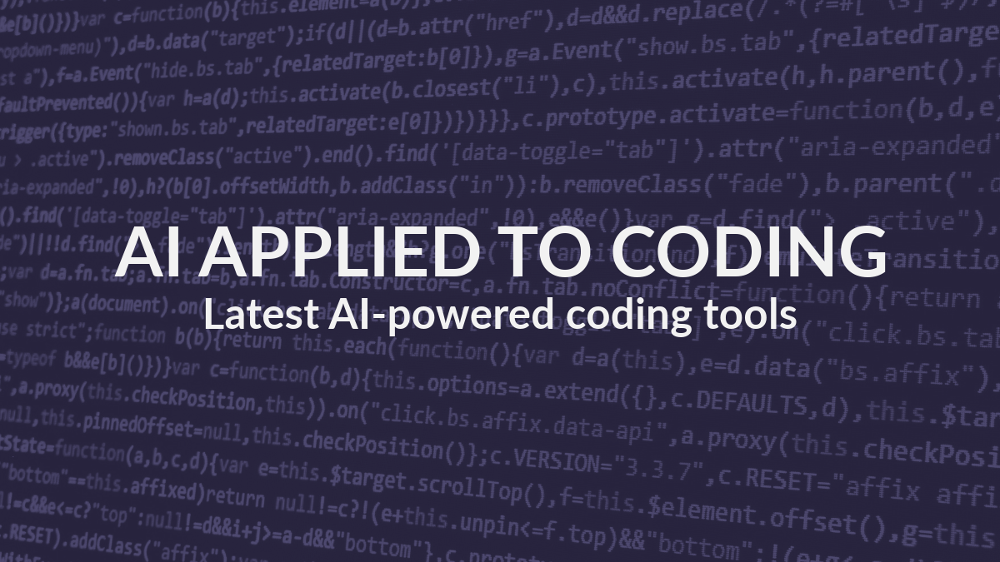

AI Applied to Coding

Table of Contents
Introduction: Using AI in Coding
An overview of how AI is impacting the world of coding and how it is changing the job of software developers.
State-of-the-Art Research: AI Tools Applied to Coding
A review of the latest research and innovations in AI tools that assist in the coding of software. This will highlight the newest studies and upcoming innovations in AI-assisted coding.
Important Tools
A detailed description of the current widely-used AI tools and technologies for coding. This section explores established AI tools and platforms that aid in automating and enhancing the process of coding while highlighting their strengths and weaknesses.
Emerging Tools
A look at emerging AI tools and technologies that are starting to gain traction in the field of coding. This section discusses the potential of these new tools and how these tools could impact coding for years to come.
Introduction: Using AI in Coding
Artificial intelligence in the world of software engineering raises both concerns and hopeful expectations for the future. As AI continues to advance, we quickly learned that AI can process and develop code faster but as accurately as the human mind. However, this questions the jobs of software engineers will be overtaken and replaced by AI. Found by research from the article, “AI And The Future Of Coding”, thirty percent of all coding has already been developed by AI. On the other hand, many deny this theory, as they believe that some code requires more creative, less generic writing. Most codes that need human attention cannot be skewed or at risk through AI generated works because of the lack of security. But aside from these different opinions, we know for a fact that because AI has become more accessible to the public; many can develop and gain opportunities from simple technical software coding AI can produce. As of now, we can only watch AI grow and see where the future of technology according to AI takes us.
State-of-the-Art Research: AI Tools Applied to Coding
Important Tools
There are a myriad of AI tools out there for software developers which work to streamline development and assist developers in creating high-quality software projects. In this section, we are going to focus on three of those tools and compare their strengths and their weaknesses. First, we are going to discuss ChatGPT. This conversational AI assistant is one of the most widely used AI tools across various fields. ChatGPT surpasses other models when it comes to providing developers with thorough code explanations. This model is a go-to when you just need quick information on external libraries or need a more in-depth understanding on a piece of code that may look confusing or intimidating starting out. One major pitfall when using ChatGPT, is its inability to flow seamlessly with the development process. It can be quite annoying to have to go to and from the coding editor when you need assistance. The next AI-powered tool we are going to talk about is Tabnine. This tool works seamlessly with numerous IDEs making it an ideal choice for developers. Tabnine excels at auto-completing functions, identifying potential errors and generating test cases in order to help developers create more efficient and accurate code. However, its chat functionality is sometimes not very accurate and it can have trouble implementing proper error handling in its auto-completed functions. Additionally, the test cases often lack complexity which can mean they need more human refining and enhancements. Another important AI-powered coding tool that deserves a mention is GitHub CoPilot. This tool has many helpful capabilities to aid in the development process from auto-completion to test case generation. It is very similar to Tabnine in its functionality, however, it has been known to provide more thorough and accurate responses when it comes to error handling and test case creation. However, like many AI-powered assistants even if it provides a correct solution it may not always be the most effective solution. In conclusion, all of the tools discussed work to improve the efficiency and quality of a developers time, however, as a developer it is important to always evaluate code given from AI coding assistants to determine if it will fit the needs of your program.
Emerging Tools
There are numerous emerging AI tools used to transform the coding industry by enhancing productivity and automating various aspects of software development. Some tools include Google’s Gemini 2.5 Pro which is an advanced AI model that excels in reasoning abilities by combining “a significantly enhanced base model with improved post-training.” It processes tasks step-by-step and makes more informed decisions by supporting multi-model inputs like text and code. Microsoft 365 Copilot’s Researcher and Analyst Agents are “deep reasoning” AI agents that assist in research and data analysis tasks. “Researcher” relies on OpenAI’s deep research AI model to pull off “complex, multi-step research.” It does this by integrating data from various sources, while “Analyst” processes raw data and executes Python code; which allows it to function like a data scientist. Another tool is DeepSeek’s V3 Model. This is a Chinese AI model that has rapidly emerged as a “notable player” in the global AI landscape in recent months. They’ve accomplished this by showcasing significant improvements in reasoning and coding capabilities. Tools like these, and more, are crucial for code optimization/quality improvement, automated debugging/error detection, faster learning/skill enhancement, enhanced collaboration/documentation, etc.
Sources
Werner, J. (2024, May 9). AI and the future of coding. Forbes. https://www.forbes.com/sites/johnwerner/2024/01/24/ai-and-the-future-of-coding/
Education, I. (2024, November 25). What is AI code-generation? https://www.ibm.com/think/topics/ai-code-generation
Lawler, R. (2025, March 25). Google says its new ‘reasoning’ Gemini AI models are the best ones yet. The Verge. https://www.theverge.com/news/635502/google-gemini-2-5-reasoning-ai-model
Lawler, R. (2025, March 26). Microsoft adds ‘deep reasoning’ Copilot AI for research and data analysis. The Verge. https://www.theverge.com/microsoft/636089/microsoft-365-copilot-reasoning-ai-agents
Mo, L., & Goh, B. (2025, March 25). China’s DeepSeek releases AI model upgrade, intensifies rivalry with OpenAI. Reuters. https://www.reuters.com/technology/artificial-intelligence/chinas-deepseek-releases-ai-model-upgrade-intensifies-rivalry-with-openai-2025-03-25/
Tent, M. (2024, May 1). I compared every AI coding assistant: The Pros and Cons. Medium. https://medium.com/@moneytent/i-compared-every-ai-coding-assistant-the-pros-and-cons-ce41f891900e